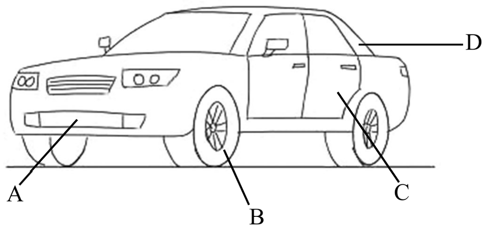

先讀文章、作答下方的題目，再展開最後的「看答案、依據句與逐段中譯」。也可以到互動練習線上作答，交卷後自動批改。
第 1 段Crash testing for vehicles is very important in helping minimize deaths, injuries, and property damage from vehicle crashes. One unit of the U.S. government responsible for ensuring the correct undertaking of this task is the Insurance Institute for Highway Safety (IIHS), a nonprofit, independent scientific body and educational organization. Another branch of government, the Highway Loss Data Institute, supports the mission of the IIHS. Auto insurers also support both organizations.
第 2 段There are multiple kinds of crash tests for vehicle safety undertaken to provide the necessary information and guidance to vehicle owners. Some examples are frontal impact tests, offset tests, side impact tests, and rollover tests. The front-crash test accelerates a car straight into a solid concrete barrier. The scenario mimics what would happen if two cars crash head-on or a single vehicle crashes into a fixed object. An offset test requires only a portion of the front of the car to impact the barrier or a vehicle. It is important since impact forces in this kind of test remain the same as those with the frontal impact test, but only a small portion of the car absorbs all the force of the impact.
第 3 段A side impact test simulates a car that is crossing an intersection being hit on the side by a car running a red light. The test is very important since side impact accidents in vehicles result in a high fatality rate. This happens because cars usually do not have a significant crumple zone on the side to cushion all the impact forces before the occupant is injured. A rollover test verifies the car’s ability to support itself, especially from the pillars supporting the roof, during a dynamic impact.
第 4 段A lot of crash test programs are practiced around the world and provide necessary safety performance data based on real-world conditions.
43.Which of the following is the mission of IIHS?
44.How does the frontal impact test differ from the offset test?
45.What does “crumple zone” mean in the third paragraph?
46.Which part of the vehicle is the focus of the rollover test? Choose the English letter linked to the part.

| 題號 | 官方答案 | 答對率 | 鑑別度 |
|---|---|---|---|
| 43 | (B) | — | — |
| 44 | (C) | — | — |
| 45 | (D) | — | — |
| 46 | (D) | — | — |
答對率：本卷非正式施測，無答對率
第 1 段Crash testing for vehicles is very important in helping minimize deaths, injuries, and property damage from vehicle crashes.
第 1 段One unit of the U.S. government responsible for ensuring the correct undertaking of this task is the Insurance Institute for Highway Safety (IIHS)
第 2 段It is important since impact forces in this kind of test remain the same as those with the frontal impact test, but only a small portion of the car absorbs all the force of the impact.
第 3 段This happens because cars usually do not have a significant crumple zone on the side to cushion all the impact forces before the occupant is injured.
第 3 段A rollover test verifies the car’s ability to support itself, especially from the pillars supporting the roof, during a dynamic impact.
第 1 段車輛撞擊測試對於減少車禍造成的死亡、傷害和財物損失非常重要。美國負責確保這項工作正確執行的單位之一，是公路安全保險協會（IIHS），這是一個非營利、獨立的科學與教育機構。另一個單位「公路損失數據協會」則支援 IIHS 的任務。汽車保險業者也支持這兩個組織。
第 2 段為了提供車主必要的資訊和指引，車輛安全的撞擊測試有很多種，例如正面撞擊測試、偏置撞擊測試、側面撞擊測試和翻滾測試。正面撞擊測試是讓車子加速，直直撞上堅固的混凝土牆，模擬兩車迎面相撞，或單一車輛撞上固定物體的情況。偏置撞擊測試只讓車頭的一部分撞上障礙物或另一輛車。這項測試很重要，因為撞擊力道和正面撞擊測試相同，卻只由車子的一小部分承受全部的衝擊力。
第 3 段側面撞擊測試模擬的是車子穿越路口時，一輛闖紅燈的車子從側面撞上來的情況。這項測試非常重要，因為側面撞擊事故的死亡率很高。原因是車子側面通常沒有足夠的潰縮區，無法在乘客受傷之前緩衝所有的撞擊力。翻滾測試則是檢驗車子在動態撞擊時支撐自身的能力，尤其是支撐車頂的車柱。
第 4 段世界各地有許多撞擊測試計畫，根據真實世界的狀況，提供必要的安全性能數據。
第 1 段Crash testing for vehicles is very important in helping minimize deaths, injuries, and property damage from vehicle crashes.
第 2 段There are multiple kinds of crash tests for vehicle safety undertaken to provide the necessary information and guidance to vehicle owners.
第 4 段A lot of crash test programs are practiced around the world and provide necessary safety performance data based on real-world conditions.